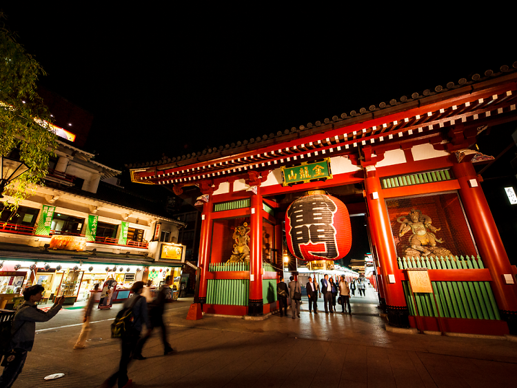
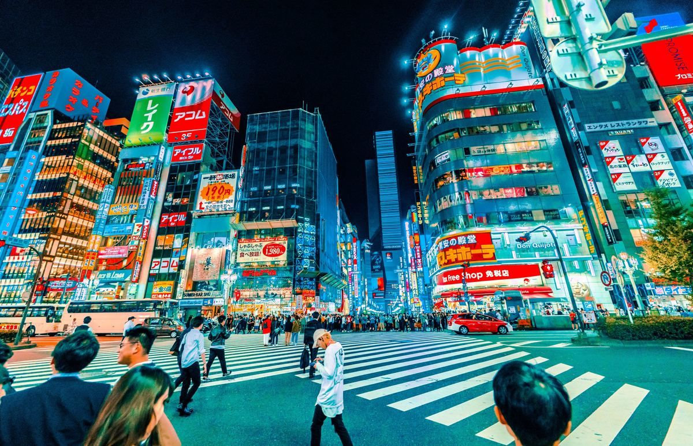

Multimedia
Explore some of Tokyo's visual contrasts: busy streets, the lights of commercial districts and spaces where the city never seems to stop.
Image gallery

A view of the architecture and urban energy of Japan's capital.

Shibuya Crossing is one of the city's best-known and busiest places.

At night, neon lights and signs turn Tokyo's streets into a glowing landscape.